Cette rubrique rassemble des animations interactives, fiches multimédias et QCM pour aborder
les circuits, les machines électriques, les protections, la sécurité et la production d’énergie
en électrotechnique.
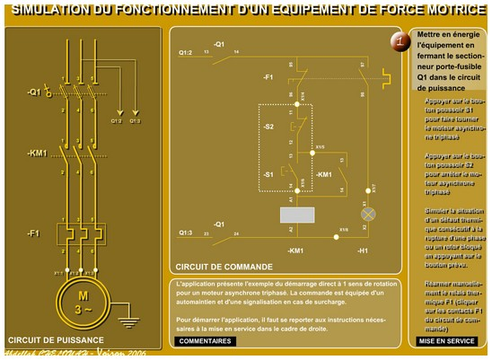
Simulation d'un équipement de force motrice
Mots‑clés : démarrage direct, moteur asynchrone triphasé, commande, puissance, défaut thermique
Animation basée sur le schéma animé du démarrage direct d’un moteur asynchrone triphasé,
permettant d’observer les interactions entre commande et puissance et de simuler un défaut thermique.
Voir l'animation
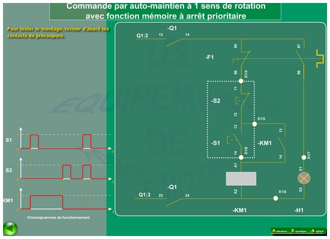
La commande impulsionnelle et par auto-maintien
Mots‑clés : commande impulsionnelle, auto‑maintien, force motrice, automatisation
Présentation des différents schémas de commande rencontrés dans les équipements de force motrice
pour mieux comprendre les objectifs d’automatisation.
Voir l'animation
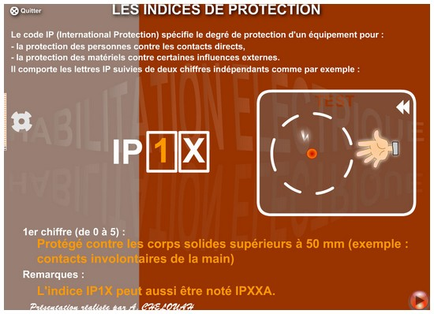
Les indices de protection
Mots‑clés : IP, protection, enveloppes, sécurité
Animation illustrant le tableau des indices de protection pour mieux en comprendre
la signification et les applications.
Voir l'animation
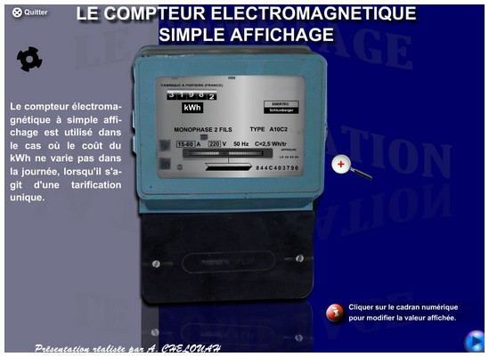
Le compteur électromagnétique
Mots‑clés : comptage d’énergie, compteur électromagnétique, tarif EDF
Présentation interactive du compteur électromagnétique pour décoder les informations
portées sur l’appareil et comprendre son fonctionnement.
Voir l'animation
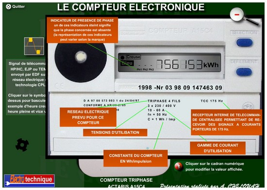
Le compteur électronique
Mots‑clés : comptage d’énergie, compteur électronique, avantages, particularités
Animation montrant les avantages et particularités du compteur électronique
qui a remplacé progressivement les compteurs électromagnétiques.
Voir l'animation
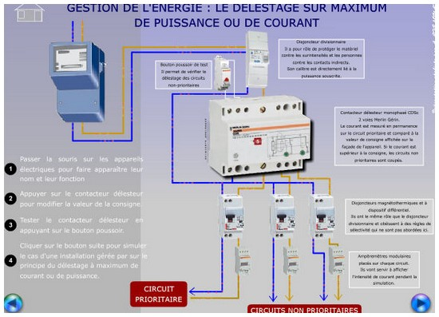
Le délestage à maximum de courant
Mots‑clés : délesteur, économie d’énergie, facture EDF, 3 voies
Présentation d’un délesteur 3 voies permettant de tester son fonctionnement
et de comprendre son intérêt pour réduire la facture.
Voir l'animation
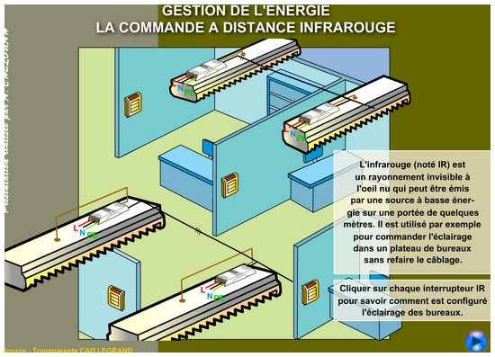
La commande à distance infrarouge
Mots‑clés : infrarouge, domotique, luminaires, confort d’utilisation
Illustration d’un système de commande à distance de luminaires par infrarouge,
avec les constituants et une simulation de fonctionnement.
Voir l'animation
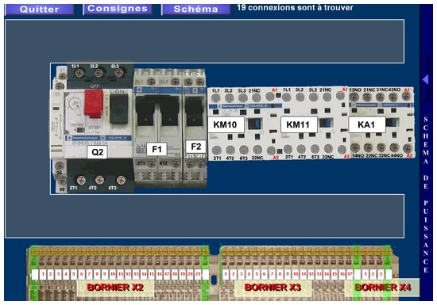
Platine virtuelle – câblage de la partie puissance
Mots‑clés : câblage, départ moteur, platine virtuelle, puissance
Platine virtuelle permettant aux élèves de s’exercer au câblage de la partie puissance
d’un départ moteur à partir d’un schéma.
Voir l'animation
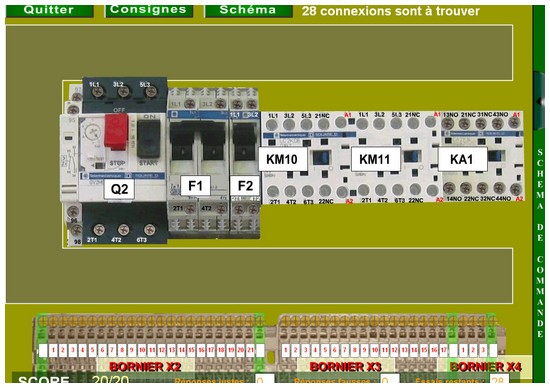
Platine virtuelle – câblage de la partie commande
Mots‑clés : câblage, commande, évaluation, départ moteur
Suite de la platine virtuelle puissance, utilisée comme évaluation sommative
pour le câblage de la partie commande.
Voir l'animation
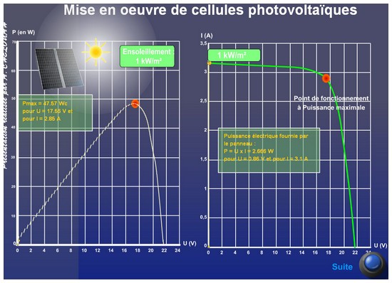
Les panneaux solaires – détermination de la puissance crête
Mots‑clés : panneaux photovoltaïques, puissance crête, courbes I=f(U), rendement
Module sur l’interprétation des caractéristiques de panneaux solaires et
la détermination de la puissance crête à partir des courbes courant‑tension.
Voir l'animation
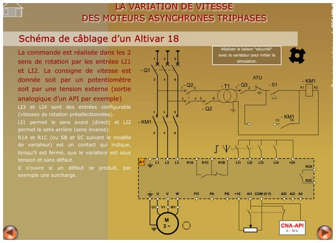
La variation de vitesse des moteurs asynchrones triphasés
Mots‑clés : moteur asynchrone, variateurs, convertisseurs statiques, vitesse variable
Cours multimédia expliquant les solutions de variation de vitesse des moteurs asynchrones
et l’apport des convertisseurs statiques de puissance.
Voir l’animation
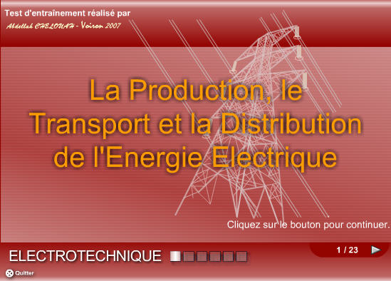
Questionnaire sur la production, le transport et la distribution
Mots‑clés : production, transport, distribution, énergie électrique, QCM
Questionnaire utilisable en classe pour réviser la séquence sur la production,
le transport et la distribution de l’énergie électrique.
Voir l’animation
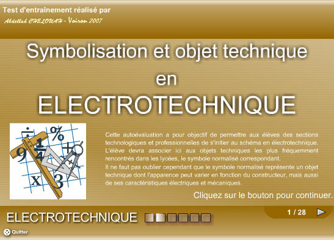
Questionnaire sur les symboles utilisés en schéma électrique
Mots‑clés : symboles normalisés, schéma électrique, auto‑évaluation
Autoévaluation pour associer objets techniques et symboles normalisés
les plus courants en électrotechnique.
Voir l’animation
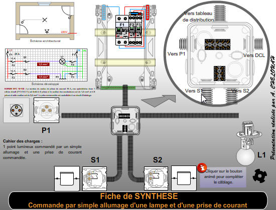
Fiche de synthèse sur le montage électrodomestique à simple allumage
Mots‑clés : pédagogie, électrique, atelier, bac pro, bâtiment, câblage, prise commandée, simple allumage, STI, électricité, électrodomestique
Cette animation présente une synthèse du montage électrodomestique du simple allumage
(point lumineux et prise commandée) vu dans les classe...
Voir l'animation
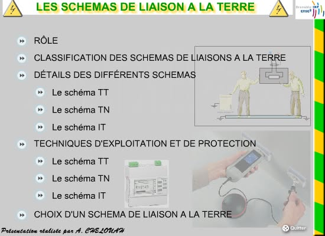
Les schémas de Liaison à la Terre
Mots‑clés : slt, sécurité, installation, continuité de service, protection, différentiel, magnétothermique, défaut, isolement, contact direct, contact indirect
On ne le sait pas toujours mais la sécurité électrique dans une installation électrique dépend directement du schéma de liaison à la terre et donc de la stratégie mise en oeuvre pour faire cohabiter deux notions : la sécurité des personnes et la continuité de service.
Voir l'animation
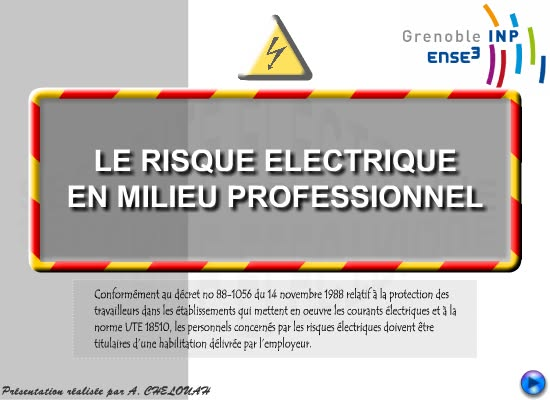
La sécurité électrique
Mots‑clés : risque, danger, sensibilisation, habilitation, professionnelle, protection
Je présente un module d'apprentissage de la sécurité électrique que j'utilise en école d'ingénieur pour sensibiliser à la problématique du danger électrique et sur les moyens de s'en prémunir. De nombreuses notions et vocabulaires sont utilisés.
Voir l'animation
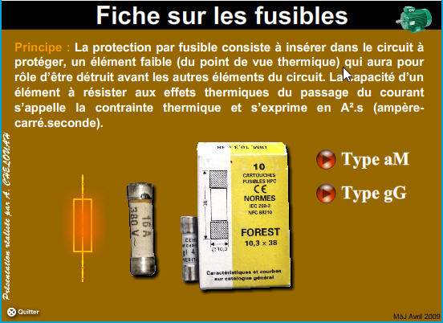
Fiche sur les fusibles aM et G1
Mots‑clés : fusible, fusion, g1, aM, défaut, surcharge, court-circuit
Cette animation présente les différences entre les deux grandes familles de fusibles (ce ne sont pas les seules) : aM pour Accompagnement Moteur et G1 pour usage générale. A l'aide de la caractéristique temps - courant efficace, on peut analyser le temps de coupure pour ces deux familles de fusible et exploiter leurs différence.
Voir l'animation
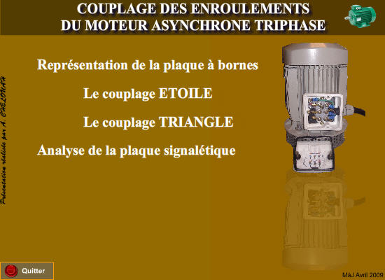
Câblage de la plaque à borne d'un moteur asynchrone triphasé
Mots‑clés : câble, moteur, asynchrone, triphasé, couplage, triangle, étoile, réseau, installation
Cette animation présente la plaque à bornes du moteur asynchrone triphasé et la problématique du couplage de ce moteur sur un réseau électrique triphasé.
Voir l'animation
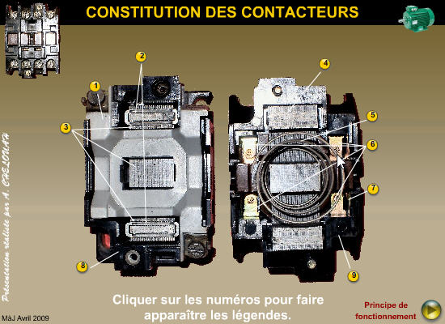
Constitution d'un contacteur et principe de fonctionnement
Mots‑clés : contacteur, triphasé, pdc, fonctionnement, principe, spires, Frager, électromagnétisme, bobine, contacts électriques
Ce module pédagogique explique la constitution interne d'un contacteur de puissance triphasé, rappelle quelques principes de base d'électromagnétisme, aborde la particularité des spires de Frager et explique le principe de fonctionnement de cet appareil électromécanique.
Voir l'animation
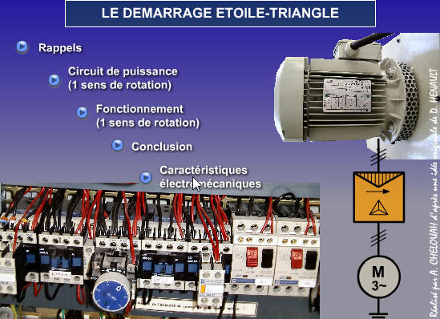
Démarrage étoile-triangle
Mots‑clés : contacteur, triphasé, fonctionnement, principe, électromécanique, moteur asynchrone, étoile, triangle, couplage
Ce module pédagogique décrit le principe de fonctionnement du démarrage électromécanique étoile-triangle
qui permet de réduire la pointe de courant en régime transitoire des moteurs asynchrones triphasés.
Voir l'animation
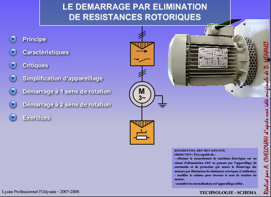
Démarrage par élimination de résistances rotoriques
Mots‑clés : contacteur, triphasé, surintensité, fonctionnement, principe, électromécanique, moteur asynchrone, rotor bobiné, rotorique
Ce module pédagogique décrit le principe de fonctionnement du démarrage électromécanique par élimination de résistances rotoriques utilisés pour les moteurs asynchrones triphasés à rotor bobinés pour réduire la pointe de courant transitoire et augmenter le couple moteur.
Voir l'animation
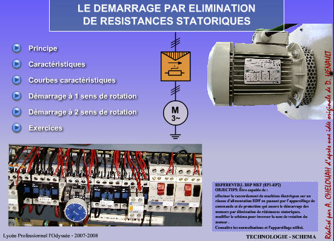
Démarrage par élimination de résistances statoriques
Mots‑clés : contacteur, triphasé, surintensité, fonctionnement, principe, électromécanique, moteur asynchrone, rotor à cage, storique
Ce module pédagogique décrit le principe de fonctionnement du démarrage électromécanique par élimination de résistances statoriques utilisés pour les moteurs asynchrones triphasés à rotor à cage pour réduire la pointe de courant transitoire.
Voir l'animation
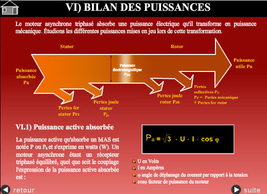
Bilan de puissance des moteurs asynchrones triphasés
Mots‑clés : moteur, triphasé, bilan, puissance, rendement, pertes
Ce module pédagogique présente le bilan de puissance des moteurs asynchrones triphasés et s'intéresse à leur rendement.
Voir l'animation
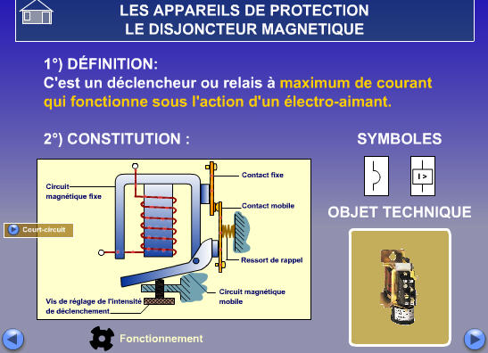
Principe de fonctionnement du relais magnétique.
Mots‑clés : relais magnétique, protection, court-circuit, force motrice, commande
Utilisé pour la protection d'une installation de force motrice, le relais magnétique a pour rôle de détecter les courants de court-circuit et d'ouvrir le circuit de commande et de puissance à la suite.
Voir l'animation